Open source · Python
github.com/muhammadzareii/respeck-activity-recognitionOverview
The Respeck is a small chest-worn sensor patch containing a 3-axis MEMS accelerometer sampling at 12 Hz, originally designed for clinical respiratory monitoring. Its 12 Hz rate gives a Nyquist limit of 6 Hz — more than sufficient for human locomotion: walking step frequency peaks at 1.5–2.5 Hz, running at 2.5–4.0 Hz. This project uses the Respeck accelerometer signal for physical activity recognition and long-term behavioural analysis.
The work has two complementary parts. The first is a clean inference pipeline that applies a pre-trained CNN model to long multi-hour recordings, chunking them into 50-sample windows (4.17 s), classifying each window, and producing hourly and daily activity summaries. The second is a deeper classifier study — a comprehensive comparison of single-stage and two-stage hierarchical classifiers using handcrafted time- and frequency-domain features — exploring how well different model families can separate a larger set of fine-grained activity classes including several lying postures, shuffling, sitting/standing transitions, and stair variants.
Raw Signal Characteristics
Each activity imprints a distinct pattern in the three-axis acceleration signal, which is the foundation for classification. Standing (Fig. 1) is the simplest case: all three axes are nearly constant, reflecting static gravitational loading with negligible dynamic component. Walking (Fig. 2) introduces a rhythmic oscillation at roughly 1.5–2 Hz, visible across all axes with a characteristic anti-phase relationship between the vertical and anterior axes due to the heel-strike cycle.
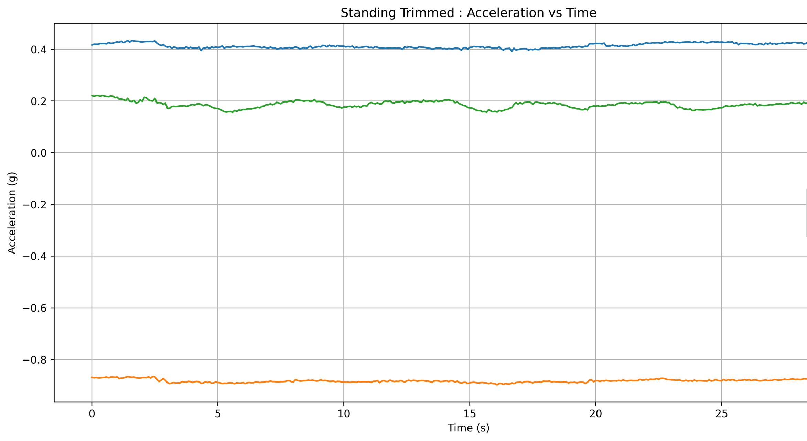
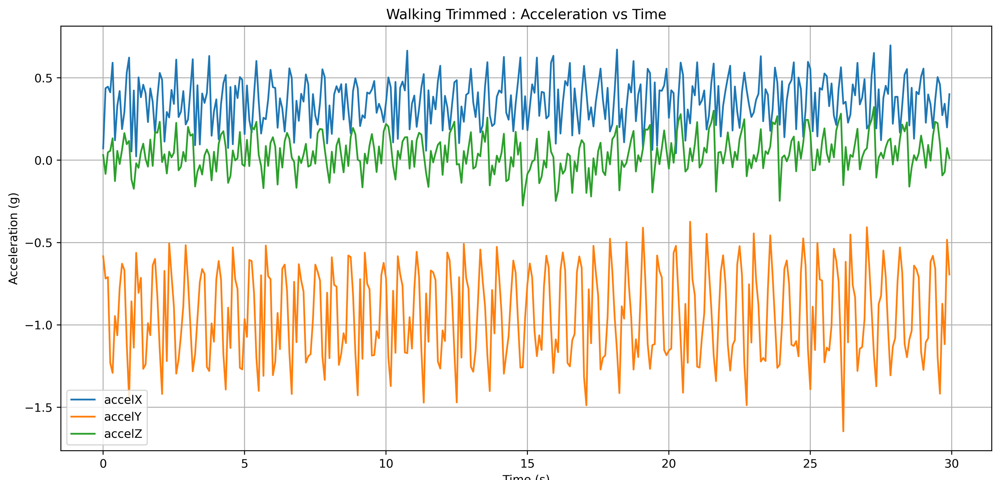
Running (Fig. 3) produces a dramatically different signature from walking: the amplitude is two to three times larger and the dominant frequency shifts upward to 2.5–4 Hz. The three axes are more tightly correlated in phase, reflecting the more vertical and symmetric impact of the running stride on the chest. Stair ascending (Fig. 4) resembles walking in rhythm but is asymmetric — the accelZ (vertical) component has an intermittent elevation transient corresponding to the step-up impulse, and the overall envelope is less regular than level walking.
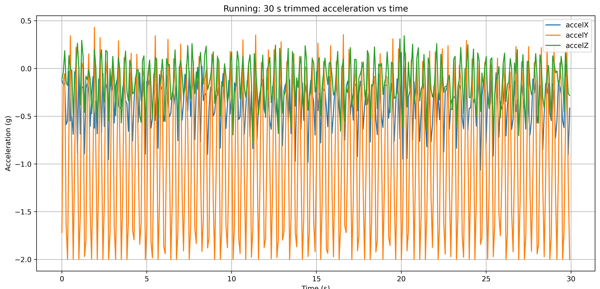

Feature Engineering
Rather than feeding raw windows directly to a neural network, the classifier study extracts a rich set of handcrafted features per window to make the class boundaries interpretable. Each 50-sample window produces two feature groups:
Time-domain features capture the statistical properties of each axis and of the signal magnitude |a| = √(ax² + ay² + az²): mean, standard deviation, RMS, peak-to-peak, min, max, skewness, and step-rate estimates derived from peak counting on the magnitude signal. The jerk vector j = da/dt is also computed, providing features sensitive to impulse events (heel-strikes, step-ups) that are less visible in the acceleration itself.
Frequency-domain features include the dominant frequency and band-power estimates at several physiologically motivated bins (0.3–1, 1–2.5, 2.5–5 Hz) computed from the FFT of the magnitude signal. Spectral entropy is also included to capture the regularity of the motion spectrum — running has a clean, peaky spectrum while miscellaneous movements are spectrally diffuse.
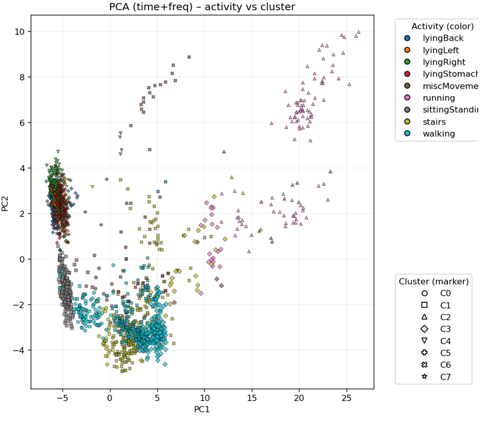
Single-Stage Classifier Comparison
Three single-stage classifiers were trained on the full feature set and compared via normalised confusion matrices on a held-out test set: Random Forest, XGBoost, and SVM with an RBF kernel. All three were evaluated on the full set of fine activity labels without any hierarchical grouping.
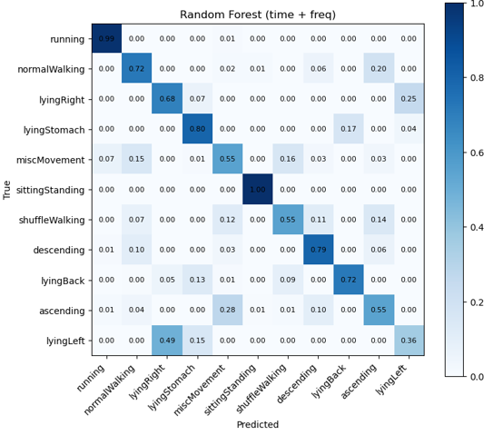
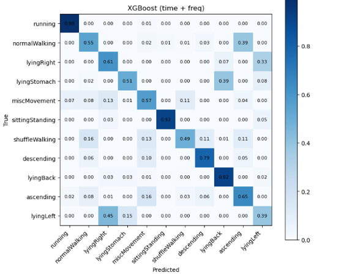
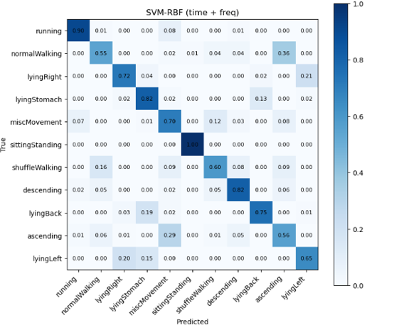
Two-Stage Hierarchical Classifier
Motivated by the PCA structure (Fig. 5), which shows clear macro-level separation before fine-level distinctions, a two-stage hierarchical approach was developed. Stage 1 trains a coarse classifier that groups all activities into four broad super-classes: STATIC (sitting, standing, all lying postures), LOCOMOTION (walking, stair variants, shuffling), RUNNING, and MISC (miscellaneous movements). Stage 2 trains a separate fine-grained classifier within each coarse group, so that the inter-group margins learned at Stage 1 are not competing with the harder within-group distinctions at Stage 2.
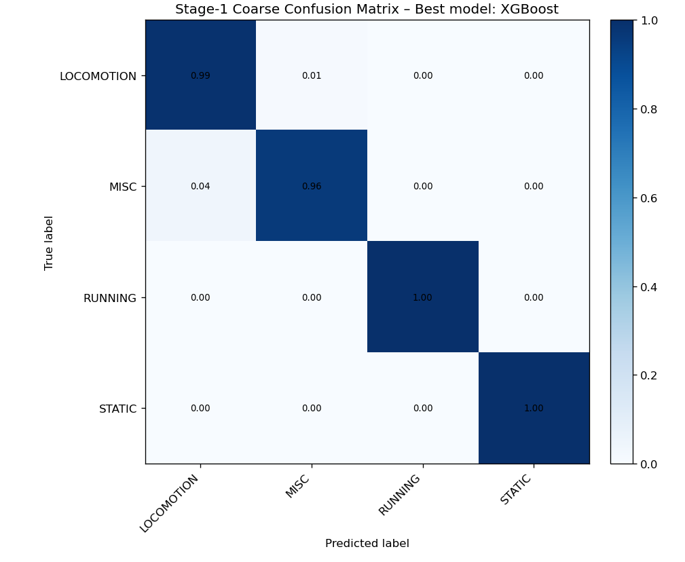
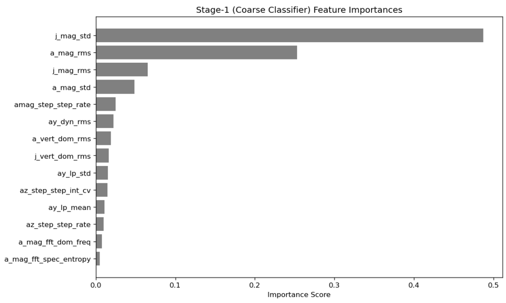
The fine-label Stage-2 classifiers operate only within their coarse group, so they are trained on a much cleaner sub-problem. Fig. 11 shows the Stage-2 fine-label confusion matrix using hard routing (every sample takes whichever Stage-1 coarse label is most probable). Fig. 12 shows the soft-decision variant, where Stage-1 posterior probabilities are used to weight the contributions of each Stage-2 model, producing smoother confusion at coarse boundaries.
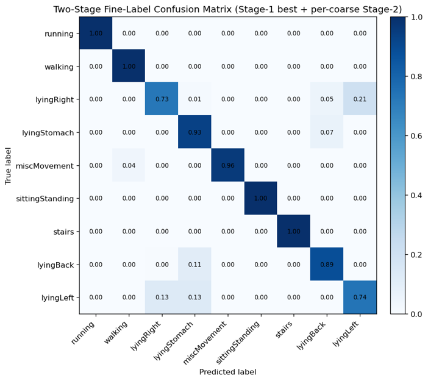
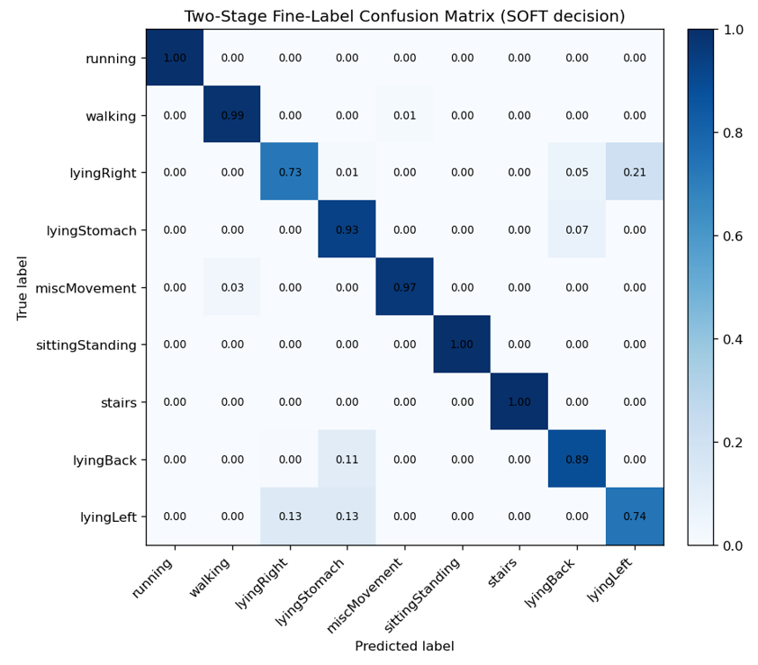
Stage-2 Feature Importances
The per-group Stage-2 models learn different feature rankings depending on the discrimination problem within each coarse class. For the STATIC group (sitting, standing, multiple lying postures), the dominant feature is the low-frequency band-power of the y-axis FFT (ay_fft_bp_1_2p5), reflecting the subtle postural differences in chest inclination angle between sitting, standing, and lying orientations (Fig. 13). For the LOCOMOTION group (walking, stairs, shuffling), dominant frequency features (a_mag_fft_dom_freq, ay_fft_dom_freq) and jerk statistics are most discriminative (Fig. 14) — locomotion sub-classes differ primarily in step cadence and impact asymmetry rather than in overall amplitude.
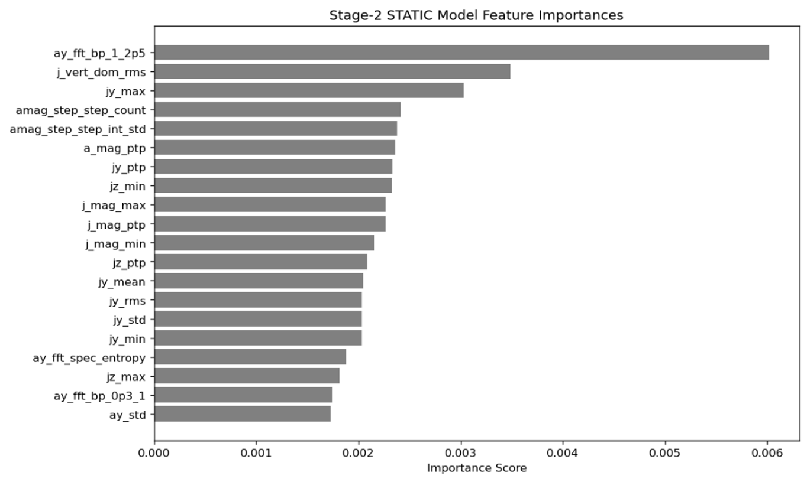
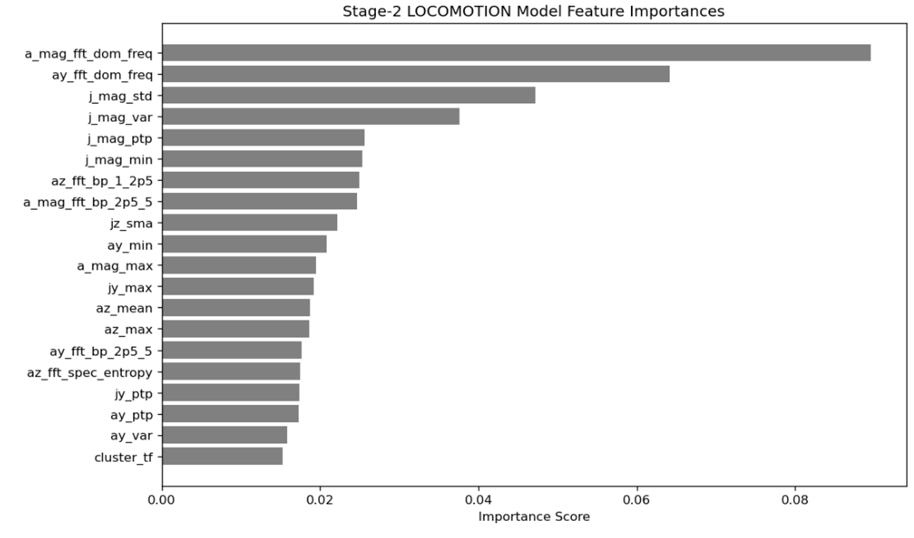
Ensemble and Final Performance
The final classifier combines the best Stage-2 model in each coarse group with a Multi-Layer Perceptron (MLP) trained on the full feature set, using soft-weighted ensemble combination. The ensemble confusion matrix (Fig. 15) shows the best overall performance of all systems evaluated. Running and most lying postures are classified with near-zero error; the remaining confusions — primarily within the locomotion group between walking and stair variants — reflect genuine signal similarity at the 12 Hz sampling rate that would likely require higher-frequency or gyroscope features to fully resolve.
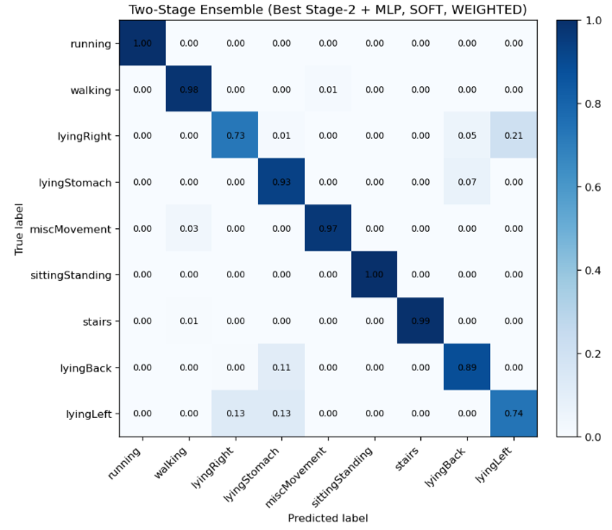
Long-Recording Inference and Behavioural Analysis
The inference pipeline applies the CNN classifier to multi-hour continuous recordings, producing per-window activity labels that are overlaid on the raw accelerometer signal for qualitative validation. Figures 16–18 show three representative 5-minute segments from three different subjects. The background shading shows the Stage-1 coarse classification (STATIC = grey, MISC = yellow, LOCOMOTION = blue-green) and the fine label (coloured strips at the bottom). The agreement between the raw signal character — flat for static, oscillatory for locomotion — and the predicted labels confirms that the classifier tracks activity transitions correctly even on subjects and recordings not seen during training.
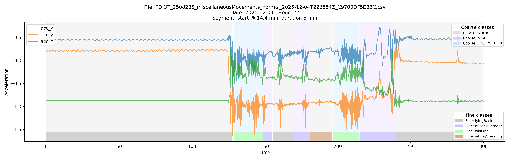
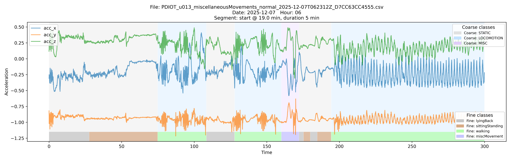
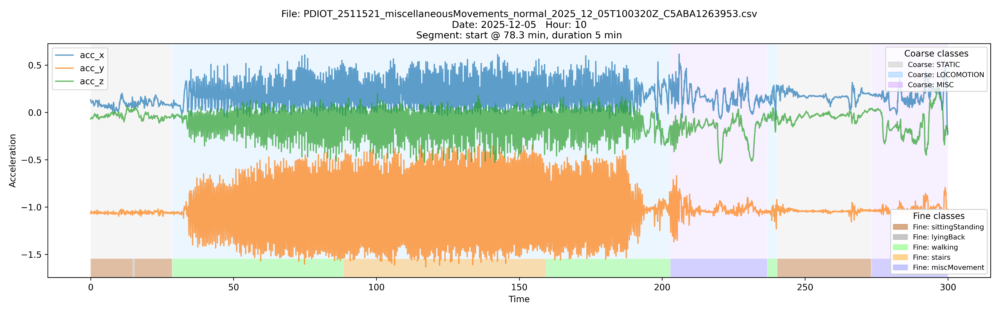